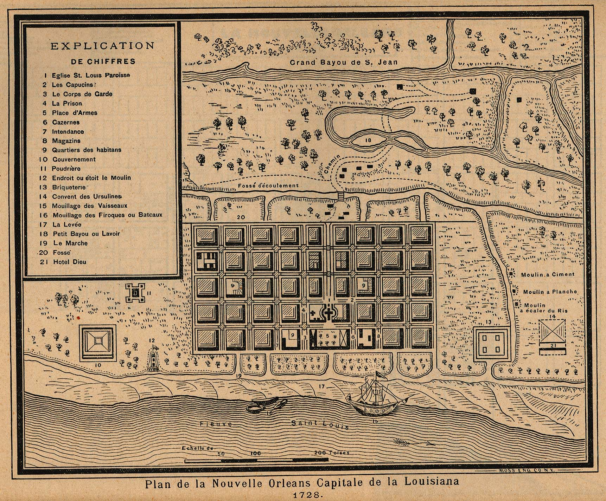
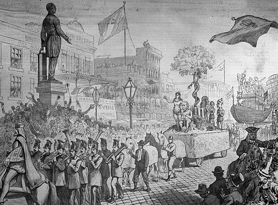
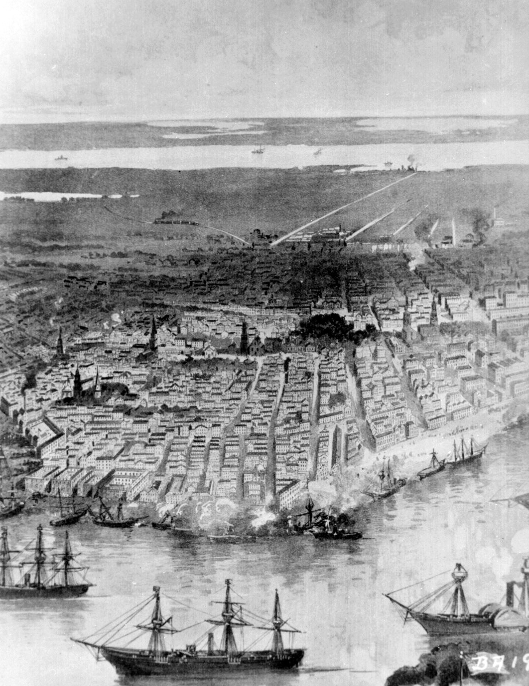
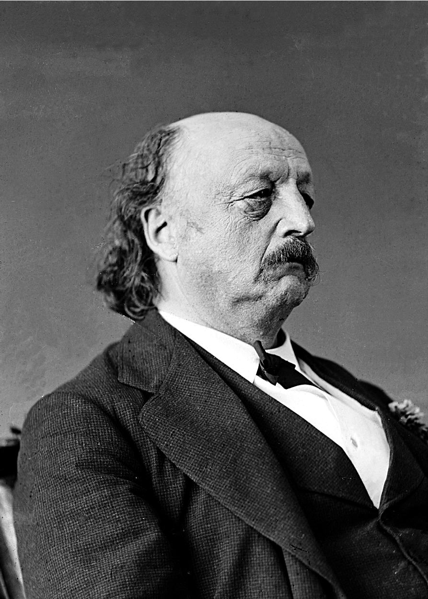

|
An important port-of-entry prior to the Civil War, the history of New Orleans is as
bound to France and Spain as it is to America. By 1861, the city had grown from a colonial
backwater to become the fourth largest city in the United States and the economic center
of the Deep South. Its unique cultural, religious, ethnic, and racial heritage ranks it
among the most distinctive cities of the antebellum period.
Jean-Baptiste Le Moyne founded New Orleans in 1718 on behalf of the French Mississippi
Company. Its location on the Mississippi River across from Lake Pontchartrain afforded a
strong defensive position with essential sea routes to Mexico, Havana, and the English
|

A 1728 map of New Orleans emphasizing its
suitability for trade
|
colonies. However, the city's low elevation and proximity to the Mississippi River also
ensured yearly floods, regular hurricanes, intense heat, and frequent epidemics of yellow
fever. In 1853, for example, one yellow fever outbreak killed nearly one-tenth of the
city's population. As a result, the city's early colonists came to depend on the
surrounding population of Native Americans and maroon (escaped slave) colonies for
survival.
During the French period, New Orleans remained small and operated primarily as a
trading and military post for France's operations in the Mississippi Valley. It was during
this period that much of the city's cultural and social framework was established. In
contrast to the British, French colonial policy sought to assimilate the various groups it
encountered into French society. As a result, Native Americans and Africans were
incorporated into New Orleans' society, making the city much more heterogeneous than its
contemporaneous English colonies. Moreover, soon after its inception, the city was flooded
with artisans and craftsman who had failed to make a living as farmers in the Louisiana
colony. These factors combined to give the young city a strong urban and cosmopolitan
character despite its small population.
Following France's defeat at the end of the Seven Years War in 1763, the Louisiana
colony, including New Orleans, was ceded to Spain. In 1768, opposition to Spanish rule
grew into open rebellion and a group of French Creole insurgents took control of the city,
forcing the Spanish governor to escape to Cuba. The Creole rebels ruled New Orleans for
ten months before Spain regained control of the city. Subsequent attempts by Spain to
Hispanicize the city had little effect on the local population and the city retained its
French character throughout the Spanish colonial period.
During the American Revolution, Spain sided with the thirteen colonies, declaring war
on Great Britain on September 22, 1779. The Spanish government allowed American agents to
establish bases in the city, bringing in munitions and supplies through the port. Spain
also sent troops up the Mississippi, wresting control of the city of Baton Rouge,
Louisiana, from the British. The citizens of New Orleans likewise came to the aid of the
Americans—for example, the merchant Oliver Pollock extended the revolting colonies
$300,000 in credit. After the war, however, the power of the declining Spanish empire
continued to wane, and in 1801 the Louisiana colony was ceded back to France in a secret
treaty. In turn, faced with mounting military pressure in Europe and the Caribbean,
Napoleon sold the Louisiana territory, and with it New Orleans, to the United States in
1803.
When the United States took control of New Orleans, it encountered an urban culture out
of step with the rest of the young republic. Because of its French and Spanish past, New
Orleans boasted the largest population of free people of color in the South, and because
|

New Orleans' celebration of carnival, in honor of
Mardi Gras, blends together the various cultural traditions that have
shaped the city. This drawing comes from the 1850s.
|
of the rights won by free blacks, the city had become uniquely shaped by this confluence
of cultures. Most slaves who arrived in New Orleans in the eighteenth-century came from a
single region in Africa, the Senegal River basin. These slaves brought with them a
strongly formed culture known as Bambara. As a result, African slaves in New
Orleans were able to maintain a much more homogenized community than slaves elsewhere in
the Americas. This culture, with its own language, folklore, religions, and historical
traditions had a major impact on the creation of a unique New Orleans culture.
The economy, as well as French and Spanish law and tradition, also contributed to a
slave population with more rights than elsewhere and laid the foundation for a relatively
powerful demographic of free people of color. In the early days of the colony, French
planters often faced economic shortages. To relieve their expenses they began to give
"free days" to slaves who then hired themselves out for wages or took their surplus food
to sell at the local market. This allowed planters to have slaves provide for themselves
many of daily necessities normally provided by the plantation owner. These "free days"
became rooted in custom, and in 1792 the Spanish governor recognized in law a slave's
right to Sundays as a free day.
Under French and Spanish tradition, manumission was also relatively easy to achieve.
Given that slaves were often able to work one or two days a week for wages, which they
could then put towards purchasing their freedom, the free population grew throughout the
eighteenth-century. Bolstered by a Spanish law that enabled them to buy and sell property
and sue others in court, free people of color came to represent an important economic and
social niche within the city. The community continued to grow in size and stature to the
point that in the 1790s the city could boast of a government-maintained militia of free
blacks who helped to control both slaves and rebellious white planters. By 1840, New
Orleans' free black population amounted to 19,226 individuals, the largest free people of
color community in the South.
Americans who arrived in New Orleans following the Louisiana Purchase, then,
encountered a city whose religion and dominant culture differed greatly from other cities
in the Union. Unlike most other antebellum American cities, New Orleans was overwhelmingly
Catholic, with Protestantism only gaining a foothold in the city after the arrival of
Germans and Americans. Indeed, the city's first Protestant church was not established
until June 16, 1805. The city's governance was also firmly entrenched in a French Creole
power structure. Frustrated that they could not take complete control of the city,
Americans adopted a Parisian model of city government, dividing the city into three
separate municipalities, each with their own school system, police department, and so
forth. Nevertheless, French influence slowly eroded during the first half of the
nineteenth-century. The city was almost lost to the British during the War of 1812, but
was saved by Andrew Jackson in the Battle of New Orleans on January 8, 1815, ensuring
American dominance and control of the Mississippi Valley.
Throughout the 1830s and 1840s, the massive influx of Irish and German immigrants, who
were more willing to assimilate to American culture, resulted in the decline of a French
Creole influence on New Orleans. However, these new immigrants readily adopted the city's
Creole cuisine and culture of festivity. In 1852, the city finally came under the control
of an American English-speaking faction, pushing the French Creoles out of power, and
reuniting the three separate municipalities into one. A result of the Americans' rise to
|

Engraving of the Union Navy's 1862 bombardment of New Orleans
|
power in the 1850s was the gradual imposition of an Anglo-American racial outlook on the
city's citizens. Laws were passed throughout the decade curtailing the rights won by the
city's free black population, and making manumission next to impossible. Moreover, the
city's white Creole population began to separate themselves from New Orleans' African
Creoles, further isolating the city's African-American population.
With the growth of population in the Mississippi Valley and the city's importance as
the central port for the cotton, sugar, and slave trade, it seemed inevitable to
antebellum Americans that New Orleans would become the most important city in the United
States during the nineteenth century. Indeed, the city's population tripled, increasing
from 49,826 in 1830 to 168,675 in 1860. The city's economy also increased substantially
during this period, with aggregate export and import trade growing from $36 million in
1842 to more than $97.5 million in 1856. With such population and economic growth, the
city was buoyed by a great sense of optimism about its future, so much so that New
Orleans' main newspaper, the Daily Picayune, declared on July 22, 1849, that the
city would "soon surpass all cities of the Union."
However, following the depression of 1837, the Mississippi River trade stagnated and by
the mid-1840s grain from the Midwest flowed not down river but east through the Great
Lakes and the Erie Canal. In the 1850s, the emergence of railroads, emanating from Chicago
throughout the northeast, led New Orleans to become increasingly marginalized
economically. Recognizing this, New Orleans business leaders attempted to connect the city
to the West and Pacific through railroad lines. However, because of the difficult terrain
surrounding the city, track was laid more slowly than elsewhere in the United States. As a
result, New Orleans never attained the economic greatness that had seemed inevitable in
the 1840s, though it did remain the most important city in the South at the dawn of the
Civil War.
When the war began, New Orleans was a key target for the Lincoln administration. Given
the city's economic importance to the Confederacy, its capture promised to deprive the
South of desperately-needed money and resources. It was also critical to the Union's grand
strategy—to take control of the Mississippi River and thus to split the Confederacy into
two pieces. Capt. (later Adm.) David G. Farragut was given responsibility for taking the
|

Benjamin "Beast" Butler
|
city by any means necessary. Between April 25 and May 1, 1862, the Union Navy bombarded
New Orleans, took control of the two Forts (Jackson and St. Philip) guarding the city, and
forced a surrender.
Once New Orleans was in Union hands, it was placed under martial law with Maj. Gen.
Benjamin Butler in command. Butler did much to help freed slaves and others the he deemed
loyal to the Union cause, but he also caused much anger and resentment with his treatment
of those who deemed traitorous. Particularly notable (and controversial) was his General
Order No. 28, issued on May 15, 1862. It declared that any female who showed disrespect
for Union soldiers would be treated as a, "woman of the town plying her avocation" (in
other words, a prostitute). Ultimately, "The Beast"—as Butler became known—was recalled to
Washington in December 1862 and replaced by Maj. Gen. Nathaniel Prentice Banks. Banks
oversaw the Union's occupation of the city for the rest of the war and into the
Reconstruction Era.
Because New Orleans was not a site of any land battles, and was not bombarded after May
1862, it did not suffer the physical damage that many other Southern cities did during the
Civil War. However, the interruption in trade caused by the war, as well as the decline in
cotton prices that followed the cessation of hostilities, was devastating to the city.
Following these economic disasters, New Orleans struggled to regain its prewar standing,
and it sank permanently into the second tier of American municipalities. Nevertheless, New
Orleans' unique culture would have a major impact on the formation of American culture for
years to come, producing some of the United States' most important writers (Truman Capote,
William Faulkner, Elmore Leonard, Anne Rice), artists (Edgar Degas, Knute Heldner), and
musicians (Louis Armstrong, Fats Domino, Mahalia Jackson, Jelly Roll Morton).
Source: Christopher Bates for the History 139A website.
|